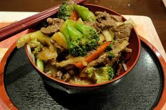

Beef Stir-Fry

Description:
Tender beef strips are quickly stir-fried with crisp and colorful vegetables to make this delicious restaurant-style dinner in your own kitchen.
Ingredients:
- 2 pounds boneless beef sirloin or beef top round steaks (3/4" thick)
- 3 tablespoons cornstarch
- 1 (10.5 ounce) can Campbell's® Condensed Beef Broth
- ½ cup soy sauce
- 2 tablespoons sugar
- 2 tablespoons vegetable oil
- 4 cups sliced shiitake mushrooms
- 1 head Chinese cabbage (bok choy), thinly sliced
- 2 medium red peppers, cut into 2"-long strips
- 3 stalks celery, sliced
- 2 medium green onions, cut into 2" pieces
- Hot cooked regular long-grain white rice
Directions:
Step 1
- Slice beef into very thin strips.
Step 2
- Mix cornstarch, broth, soy and sugar until smooth. Set aside.
Step 3
- Heat 1 tablespoon oil in saucepot or wok over high heat. Add beef in 2 batches and stir-fry until browned. Set beef aside.
Step 4
- Add 1 tablespoon oil. Add the mushrooms, cabbage, peppers, celery and green onions in 2 batches and stir-fry over medium heat until tender-crisp. Set vegetables aside.
Step 5
- Stir cornstarch mixture and add. Cook until mixture boils and thickens, stirring constantly. Return beef and vegetables to saucepot and heat through. Serve over rice.